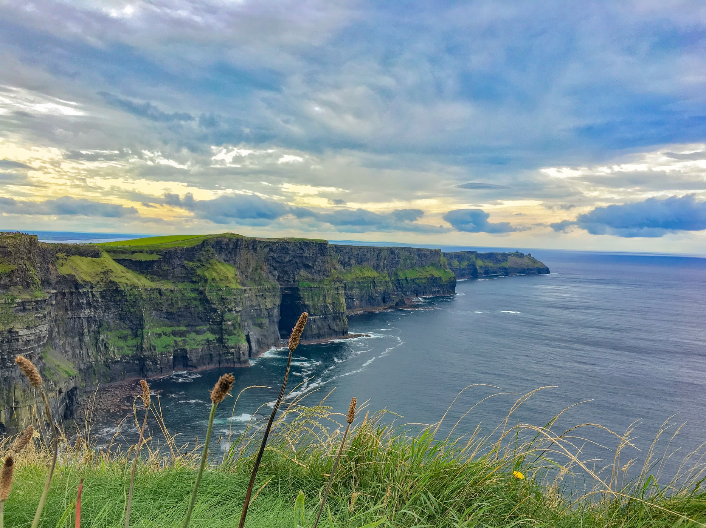

Color Scheme
I wanted to use something that would invoke thoughts of mother nature when you saw it. I used the following picture to gather inspiration for The Weather Eye's color scheme.
I used coolors.co, one of my favorite websites, to establish the following 4 colors. Prussian Blue, Army Green, Cadet Blue Crayola, and Medium Champagne. The idea is the feature the blues prominently with green as the main accent and the yellow in a few places.